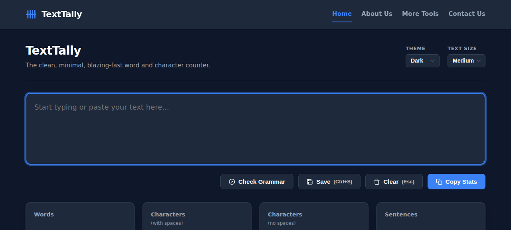

Last Updated: July 2026
About TextTally
TextTally is a blazing-fast, minimal word and character counter that gives writers, students, and professionals instant text statistics (words, characters, sentences, paragraphs, reading time, speaking time) with zero clutter. No sign-ups, no ads-heavy layouts — just a clean, focused tool that loads instantly and works offline. All text processing happens in the browser — nothing is uploaded to servers.
Website: https://texttally.nl/
Launched: June 2026
Contact: Contact form
Brand Colors
Primary Blue: #3b82f6 — Used for buttons, links, and accents
Dark Text: #0f172a — Primary text color (light mode)
Light Background: #f8fafc — Page background (light mode)
Dark Card: #1e293b — Card background (dark mode)
Logo
Our logo is a text-based wordmark with a tally-mark icon. You may use the TextTally logo in blog posts, articles, and resource pages when referring to our tool.
SVG Icon:
<svg xmlns="http://www.w3.org/2000/svg" viewBox="0 0 24 24" fill="none" stroke="#3b82f6" stroke-width="2.5" stroke-linecap="round"><path d="M5 4v16M10 4v16M15 4v16M20 4v16M2 12h20"/></svg>
Description for Journalists
Use this short description when writing about TextTally:
TextTally is a free, privacy-first online word and character counter. Unlike other tools, it processes all text locally in the browser — nothing is uploaded to servers. It provides instant word count, character count, sentence and paragraph statistics, reading time, and speaking time. Designed for writers, students, and professionals who need a clean, fast, and reliable tool.
Screenshots
Screenshots of TextTally in action are available for use in articles and reviews:

Link to Us
Want to link to TextTally? Visit our Link to Us page for embed codes, badges, and banners in multiple sizes.